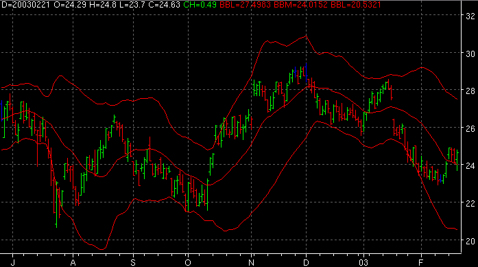

Bollinger Bands - BB

Parameters:
Color - BB plot color
Line Type - The type of plot to draw
Deviation - Standard deviations to use
MA Period - The period used for the MA
MA Type - The type of MA to use
Description:
Formula Reference:
Syntax
BB(ARRAY OUTPUT, MA Type, MA Period, Deviation)
Function
ARRAY OUTPUT can be one of the 2 BB plots (Upper, Lower)
Example
BB(Upper, SMA, 20, 2.0)